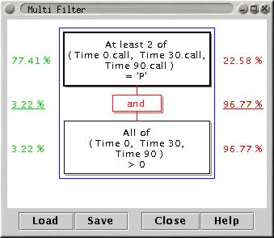
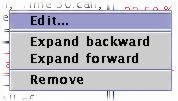
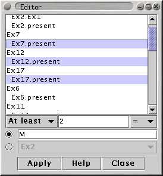

The Multi-Filter is a convenient way of filtering based on values in more than one Measurement at a time.
Rules such as "at least 3 of M1, M2, M3 or M4 are greater than 0" can be constructed using this filter.
Individual rules can be combined using the boolean operators 'and' and 'or'.
As with all filter plugins, closing the plugin's window deactives the filter (but iconifying it does not).

Rules are combined using the boolean operators "AND" and "OR".
The currently selected rule is shown with a dark border. Click on any rule to select it.
The percentage of Spots which are trapped by each rule is shown in red to the right of the rule. The percentage of Spots which pass through the rule is shown to the left of the rule. In the top level (i.e. outermost) rule, the percentage values are underlined. Note that the percentages only reflect the filtering that is done by this filter, and do not take into account any filtering being done by other filter plugins that are also active.
Use the right mouse button to open a popup-menu which allows you to add and remove rules from the filter.

Expand forwards adds a new rule after the selected rule, and Expand backwards add a new rule before the selected one.
The boolean operators used to connect rules are shown in red boxes. Double click on the box to toggle between "AND" and "OR".
Double-click on a rule box (or use the "Edit" menu item) to open the rule editor:

The general form of a rule is
One_Or_More_Things Operator Valuewhere
One_Or_More_Things is a collection of Measurements
and/or SpotAttributes,
Operator is one of >, <,
= or !=
Value is a constant (such as 1.5 or 'Q'), a
Measurement or a SpotAttribute.
When One_Or_More_Things has more than one element, then the following options are available:
All None At least At most
The "At least" and "At most" options require an additional numerical value, specified in the type-in field to the right of the options drop-down menu.
Press the "Apply" button to update the rule.
Example rules:
T1 < T0
( T1 < T0 ) AND ( T2 < T1 )
All of ( T1, T2, T3, T4 ) > T0
At most 2 of ( T2, T3, T7 ) < -0.5
When required, type conversions are applied as follows:
| to Integer | to Double | to Char | to Text | |
| from Integer | - | promote | convert or fail | convert |
| from Double | coerce or fail | - | fail | convert |
| from Char | promote or fail | promote or fail | - | convert |
| from Text | convert or fail | convert or fail | convert or fail | - |
Note: This behaviour is different to that of versions prior to 1.0.4
The special value 'NaN' (not-a-number) is used to represent a value which is unknown or missing.
All comparisions in which a NaN value is tested against any non-NaN value will be false, for example "NaN > 3", "NaN >= -2000", "400 < NaN" and "NaN > NaN" are all false.
NaN values are equal to other NaN values, for example "NaN >= NaN", "NaN <= NaN" and "NaN = NaN" are all true.
NaN values are not equal to any other value, for example "NaN = 1.0" is false.
The special values 'Infinity' and '-Infinity' represent positive and negative infinity respectively.
Infinity values behave like extreme versions of normal values, so Infinity is greater than any other number, and -Infinity is less than any other number.
Magnitude comparisons of NaN values with Infinity values are always false, for example "Infinity < NaN" and "NaN >= -Infinity" are both false. However, equality tests between NaN values with Infinity values behave as normal, so "Infinity = NaN" is false and "-Infinity != NaN" is true.
A complete description of how comparisons with NaN, -Infinity and -Infinity values work can be found here.